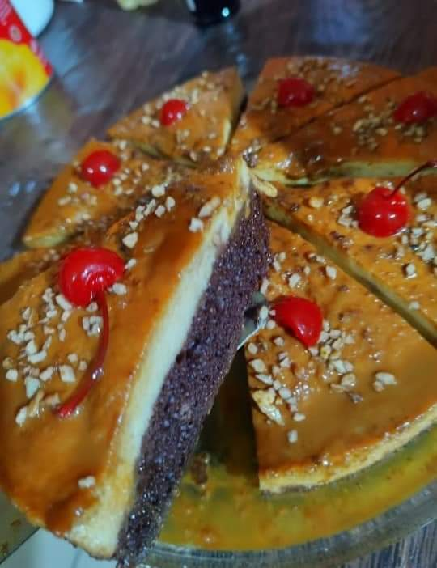

Choco Flan

Description of the recipe
a paragraph of the recipe
Ingredientes
- 1 lata de leche condensada
- 1 lata de leche evaporada
- 6 huevos
- 1 cucharada de vanilla
- 1/4 de taza de azucar para caramelizar
Pasos
- se pone la leche condensada evaporada
huevo y vanilla en la licuador
- se licua por 1 minuto
- por otro
lado se carameliza el azudar en el
molde y se incorporar lo licuado
- se hornea
a bano Maria por 1 hrs
- a 180 C se desmolda caliente
- se adorna con nuez y duraznos